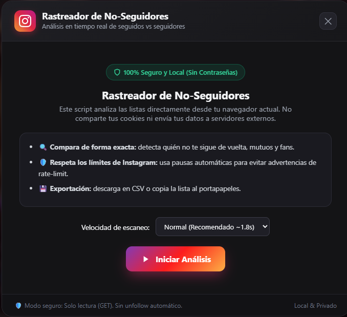

Script para tu navegador que analiza quiénes no te siguen de vuelta. Funciona en Brave, Chrome y Opera sin pedir contraseñas.

Usa el botón de arriba para copiar todo el código al portapapeles.
Presiona F12 (o Ctrl + Shift + J) y ve a la pestaña Consola.
Si te sale aviso de seguridad, escribe allow pasting y pulsa Enter. Luego pega el código y listo.
Cargando código...